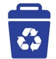
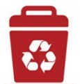
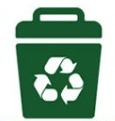
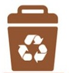
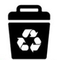
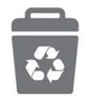
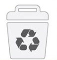
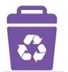

As lixeiras de coleta seletiva têm a função de separar os resíduos de acordo com o material, para facilitar a reciclagem e reduzir o impacto ambiental. Cada cor de lixeira é associada a um tipo específico de material, ajudando a destinar corretamente os resíduos para os processos de reciclagem. Aqui está um resumo da funcionalidade de cada uma
Papel

Lixeira Azul (Papel): É destinada para materiais como papel, papelão, jornais, revistas e cadernos. Esses itens podem ser reciclados para criar novos produtos de papel e reduzir o impacto ambiental.
Plástico

Lixeira Vermelha (Plástico): É destinada para embalagens plásticas, garrafas PET, sacolas e outros produtos de plástico. O plástico é um material que demora muito tempo para se decompor na natureza, por isso é importante reciclá-lo para reduzir a poluição ambiental.
Vidro

Lixeira Verde (Vidro): Deve ser usada para garrafas, potes e outros produtos de vidro. O vidro é um material que pode ser reciclado infinitamente sem perder suas propriedades, o que o torna uma opção sustentável para embalagens e recipientes.
Metal

Lixeira Amarela (Metal): Deve ser usada para latas de alumínio, latas de aço, panelas e outros produtos de metal. O metal é um material que pode ser reciclado várias vezes sem perder suas propriedades, economizando recursos naturais e energia.
Orgânicos

Lixeira Marrom (Orgânicos): É destinada para restos de alimentos, cascas de frutas, legumes, folhas, entre outros resíduos orgânicos. Esses materiais podem ser compostados para gerar adubo orgânico, reduzindo a quantidade de resíduos enviados para aterros sanitários.
Madeira

Lixeira Preta (Madeira): Deve ser usada para resíduos de madeira, como móveis quebrados, paletes, caixas e outros itens de madeira. A madeira pode ser reciclada ou reutilizada para criar novos produtos, evitando o desmatamento e o desperdício de recursos naturais.
Não recicláveis

Lixeira Cinza (Não Recicláveis): É destinada para resíduos que não podem ser reciclados, como fraldas descartáveis, guardanapos sujos, embalagens metalizadas, entre outros materiais não recicláveis. Esses itens devem ser descartados corretamente para evitar a contaminação de materiais recicláveis e o meio ambiente.
Hospitalares

Lixeira Branca (Hospitalares): Deve ser usada para resíduos hospitalares, como seringas, agulhas, luvas, máscaras, entre outros materiais contaminados. Esses resíduos devem ser descartados em lixeiras específicas e encaminhados para tratamento adequado, visando a proteção da saúde pública e do meio ambiente.
Perigosos

Lixeira Roxa (Perigosos): É destinada para resíduos perigosos, como pilhas, baterias, lâmpadas fluorescentes, produtos químicos, entre outros materiais tóxicos. Esses resíduos devem ser manuseados com cuidado e descartados em locais apropriados para evitar danos à saúde e ao meio ambiente.
Integração de Tecnologia na Gestão de Resíduos: Soluções Digitais para Sustentabilidade
No contexto do nosso projeto de extensão voltado para a educação ambiental e a promoção da sustentabilidade, a
utilização de aplicativos e sistemas para a gestão de resíduos tem se mostrado uma estratégia eficaz para
engajar a comunidade e promover ações concretas de reciclagem e descarte adequado de resíduos. Essas soluções
digitais não apenas facilitam a logística do processo de reciclagem, mas também ajudam a conscientizar os
cidadãos sobre a importância do consumo responsável e da redução do desperdício.
♻️ Dicas para reciclar melhor
- Lave as embalagens antes de descartar.
- Evite misturar lixo orgânico com recicláveis.
- Remova grampos e fitas dos papéis.
- Prefira embalagens recicláveis ou reutilizáveis.
🗑️ Curiosidades sobre reciclagem
- Uma lata de alumínio pode ser reciclada infinitas vezes.
- Plásticos podem levar até 400 anos para se decompor.
- O Brasil recicla cerca de 98% das latas de alumínio.
✅ Itens que parecem recicláveis
- Papel engordurado (ex: caixa de pizza).
- Espelhos e vidros de janelas.
- Isopor (varia por região).
- Copos plásticos com cera ou alumínio.
💡 Ideias de reaproveitamento
- Potes de vidro → porta-temperos.
- Caixas de papelão → organizadores.
- Garrafas PET → vasos ou luminárias.
📱 Links úteis / apps
- Baixar o app Cataki
- Site do eCycle
- Verifique pontos de coleta na sua cidade.